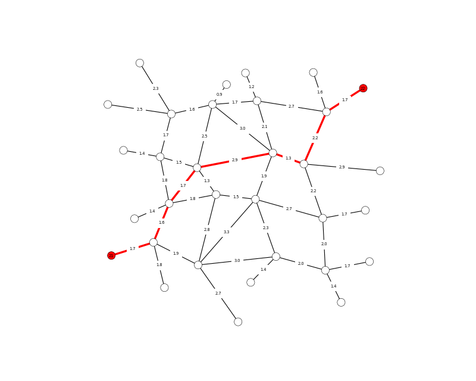

Shortest network paths

"""Network 01: Shortest path
"""
import compas
from compas.utilities import pairwise
from compas.datastructures import Network
from compas.topology import dijkstra_path
from compas.plotters import NetworkPlotter
__author__ = ['Tom Van Mele', ]
__copyright__ = 'Copyright 2017, BRG - ETH Zurich',
__license__ = 'MIT'
__email__ = 'van.mele@arch.ethz.ch'
start, end = 21, 22
# make a network from a sample file
network = Network.from_obj(compas.get('grid_irregular.obj'))
# construc an adjacency dict
# add weight to the edges corresponding to their length
# compute the shortest path
adjacency = {key: network.vertex_neighbours(key) for key in network.vertices()}
weight = {(u, v): network.edge_length(u, v) for u, v in network.edges()}
weight.update({(v, u): weight[(u, v)] for u, v in network.edges()})
path = dijkstra_path(adjacency, weight, start, end)
# visualize the result
plotter = NetworkPlotter(network, figsize=(10, 8), fontsize=6)
edges = []
for u, v in pairwise(path):
if v not in network.edge[u]:
u, v = v, u
edges.append([u, v])
plotter.draw_vertices(
text={key: key for key in (start, end)},
facecolor={key: '#ff0000' for key in (path[0], path[-1])},
radius=0.15
)
plotter.draw_edges(
color={(u, v): '#ff0000' for u, v in edges},
width={(u, v): 3.0 for u, v in edges},
text={(u, v): '{:.1f}'.format(weight[(u, v)]) for u, v in network.edges()}
)
plotter.show()